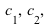
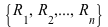

UML Association -- Definitions
This page gives the users the precise definitions used when verifying the UML. In most cases, you may skip this page since most of the terms are "intuative". However, if you wish to know what was being verified, and how does the system comes with a certain conclusion, read on.
Definition: A relation of classes(henceforth "the relation" unless otherwise specified) is an association ("undirected association", "delegation", "aggregation") or generalization of classes in the form of . (Where is the set of classes)
Definition: The function where  is a collection of classes, and is a collection of types, is a type function on the relation.
Relations allows us to represent associations and generalizations properly in the model. Note that the direction of the association or generalization is distinguished by distinguished types. The type could be any distinguished elements. For example, {--, ->, <-, -x, x-, -|>, <|-} or {0, 1, -1, 2, -2, 3, -3} (in the computer model).
Example: <|- (or -3 in the computer model)
Notation: To represent a relation and its type, we conveniently use the triple (t) where
Definition: A model is an undirected graph that contains nodes (classes) and edges (relations).
Note that although the graph is undirected, the direction of the associations and generalizations matters because they have different types.
Definition: A generated pattern is a set of (a package of) relations and classes generated from SEURAT to a UML model that represents a design pattern. The associations, generalizations, and classes are elements of the generated pattern package.
Example: A package "Proxy" contains four classes, several associations and generalizations. Note that we are treating generalizations as elements of the pattern and not the elements of the classes for simplicity.
Definition: A role set is a set of pattern participants (or classes) such that all elements of the role set are under the same role in the pattern's collaboration diagram (please take a look at the omg's specification for definitions on roles). For example:
Each role set represents some role in a design pattern. For example, represents the role of AbstractFactory of Factory design pattern.
Definition: A derived relation(from to ) is a path P of (typed)relations from class to class acting on .
For example is a derived relation of length i-1.
Definition: Two derived relations are equal (denoted as P = P') if
1) i = j and
2)
Definition: A collection of derived relations of a pattern E (denoted as  ) is created as follows:
) is created as follows:
For each role of E, create one and only one class representing the role. Then insert all possible derived relations in E into the collection such that no two derived relations in are equal.
Definition: Let  be a collection of roles of a pattern E, be derived relations of E. Let be a sequence of maximal role sets in the UML model M representing roles respectively.
We say M implements E
1) `(`ℛ`[i], {}))" align="center" border="0">
and 2)  (under the usual equality of sets).
(under the usual equality of sets).
(Translation: There is a representive for each role such that the derived relations of the pattern is completely preserved by them.)
Definition: We say a UML model M does not implement (or violates the constraints of) the pattern E if M does not implement E.